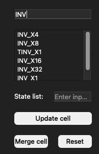
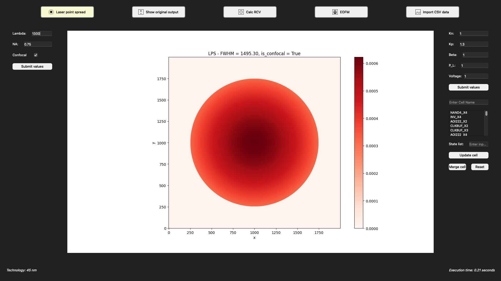
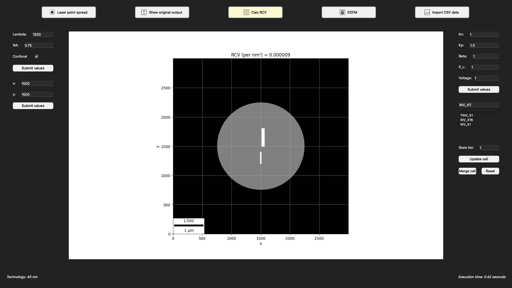
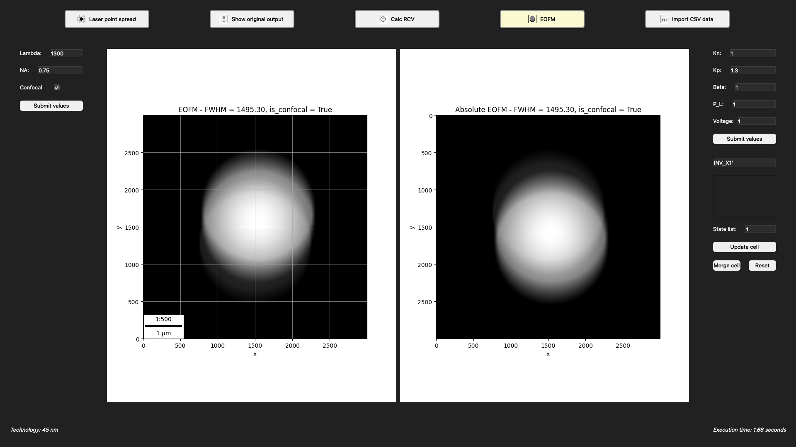
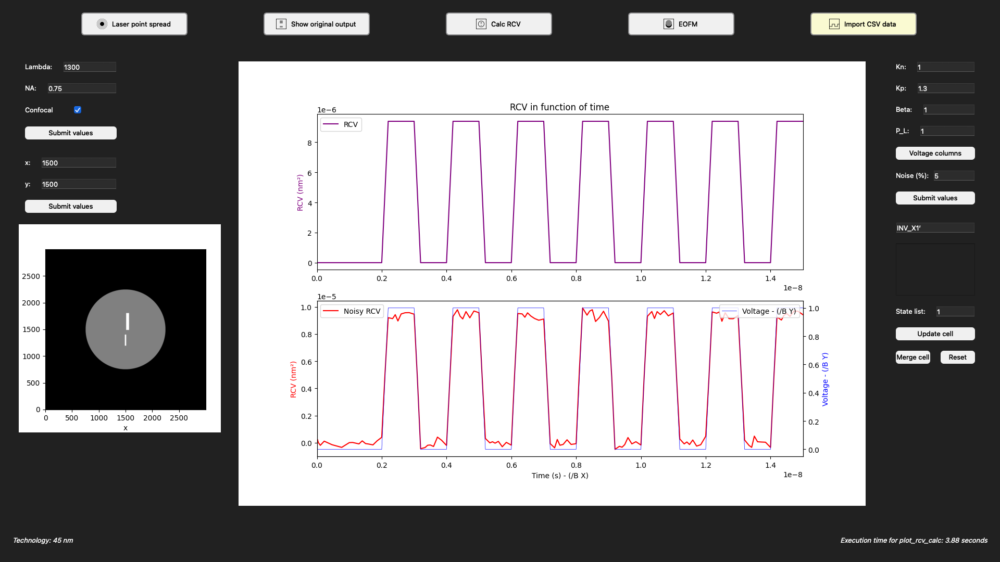

Graphical User Interface Overview
The Graphical User Interface (GUI) is split in 5 main windows.
For each window there are some parameters that always stays such as the cell, the physical and the laser parameters.
When the values are submitted, all off them get updated and the plot reload with the new values.
To select a cell of the loaded standard cell library, there is a research bar to filter the cell names.
The state list is required to validate the cell. The input pattern is processed as A-Z/0-9 input name order. For example if the cell has 2 inputs A1 and A2, then the entered value has to be 00 (or 01, 10, 11) with the first number for A1 and the second one for A2.
The selected cell and state can be updated or merged. Merging a cell state means a new matrix is generated and copying the new state to it. If another cell state was stored in it, both will me merged. To reset the merged matrix, the reset button set every matrix value to zero. Note: the update has to be saved before clicking on the merge button.
{kind=link}
Laser Point Spread
The Laser Point Spread is a view where you can see the laser configuration.
The laser has three parameters: Lambda, NA and Confocal.
The optical resolution is given by the following formula:
where 𝜆 denotes the light’s wavelength and Numerical Aperture (NA) represents the Numerical Aperture of the microscope system.
Additionally, the laser spot’s intensity follows a Gaussian distribution as shown here as:
where 𝑟 symbolizes the distance measured from the beam’s center, and 𝜎 represents the standard deviation, which can be computed as 𝜎 = 0.37𝜆/NA specifically for a confocal microscope.
The optical resolution can be improved by either reducing 𝜆 or increasing NA.
{kind=link}
Original Output
The original output view is the preview of the cell with active regions based on the applied input.
This image may change when the physics values are updated: 𝐾𝑁𝑀𝑂𝑆, 𝐾𝑃𝑀𝑂𝑆, 𝛽, 𝑃𝐿, 𝑉.
We approximates the reflected light from an active region of a transistor as a linear function of the voltage applied to transistor’s terminals (𝑉), amplification constant of transistor 𝐾 (𝐾𝑃𝑀𝑂𝑆, 𝐾𝑁𝑀𝑂𝑆), transistor’s fabrication related parameter (𝛽), power of incident laser light (𝑃𝐿), and the area of transistor’s active regions.
This parameters are then stored in the active regions area to compute Optical Probing (OP) later on.
{kind=link}
Reflection Caliber Value (RCV)
In Toward Optical Probing Resistant Circuits: A Comparison of Logic Styles and Circuit Design Techniques , a model is proposed for the transistor’s reflection under OP.
The RCV model approximates the reflected light from an active region of a transistor as a linear function of the voltage applied to transistor’s terminals (𝑉 ), amplification constant of transistor 𝐾 (𝐾𝑃𝑀𝑂𝑆 = 1.3𝐾𝑁𝑀𝑂𝑆), transistor’s fabrication related parameter (𝛽), power of incident laser light (𝑃𝐿), and the area of transistor’s active regions. The RCV value is expressed as follows:
where 𝑝(𝑟) and 𝐴(𝑟,𝜃) represent the laser’s Gaussian power distribution and the active region’s area under the laser spot in polar coordinates, respectively. Additionally, this equation can be expanded to include a logic cell consisting of multiple transistors.
While the RCV value is also based on the position of the laser, Auto-OPS has the possibility to change the laser position in the 3000x3000 area.
{kind=link}
Electro-Optical Frequency Mapping (EOFM)
To localize periodical signals on the chip, the laser can be scanned over the chip and feed the detector’s output into a narrow-width bandpass filter set to the frequency of interest. The measurement results in a gray-scale encoded image of the scanned area, where bright spots indicate areas of switching activity. The corresponding technique is called Electro-Optical Frequency Mapping (EOFM).
Both EOFM and absolute EOFM are shown to the user based on the laser and the physical parameters values.
{kind=link}
Cell Voltage Modulation
To go further in the simulation Auto-OPS includes a voltage modulation for the selected cell.
This mode is calculating, based on a csv file which store the voltage in function of time, the RCV value with all the set parametters.
To have a more realistic output, Auto-OPS embed a gaussian distributed noise which can be attapted in the physics parametters.
The csv file can contains multiple columns and they can be selected and updated directly from the GUI.
This feature can take more or less time based on the length of the csv file because it calculate all the RCV values for each modulation of the voltage.
{kind=link}